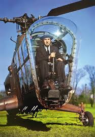

«Авіація — це не індустрія і не наука. Це диво.»

Хто такий Ігор Сікорський?
Ігор Іванович Сікорський — людина, яка вміла мріяти сміливо й перетворювати ці мрії на крила. Від юного ентузіаста в Києві до всесвітньо відомого авіаконструктора у США — його шлях став символом прагнення, віри та інженерного генія.
Саме завдяки Сікорському вертольоти перестали бути фантастикою та стали невід’ємною частиною сучасної авіації.
Основні досягнення
- «Ілля Муромець» — перший у світі багатомоторний літак, що відкрив нову епоху в авіабудуванні.
- Заснування компанії Sikorsky Aircraft у США — підприємства, яке стало легендою світової авіації.
- Створення VS-300 — першого успішного серійного гелікоптера, який визначив розвиток цілої галузі.
- Його машини піднімалися у небо для науки, цивільних подорожей і навіть військових операцій, залишивши слід у ХХ столітті.